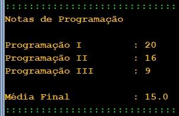

| Exercício | Dificuldade | Pontos | Data limite | Créditos |
| Ficha03_037
|
Normal |
4.0 |
04/10/2022 12:00:00 |
(c)M@nso 2021 |
Média das notas de Programação
Pretende-se construir um programa para calcular a média das notas de pauta de três disciplinas de programação:
Programação I
Programação II
Programação III
Construa um algoritmo que gere aleatóriamente as notas de pauta das disciplinas e de seguida imaprima a suma média.
As notas de pauta são valores inteiros e aleatórios no intervalo [0,20]

| Input |
Output |
|
Notas de Programação
Programação I : 15
Programação II : 8
Programação III : 4
Média Final : 9.0 |
Algorithmi 22.05 Student version
(c) Antonio M@nso 2022
Instituto Politécnico de Tomar - All rights reserved